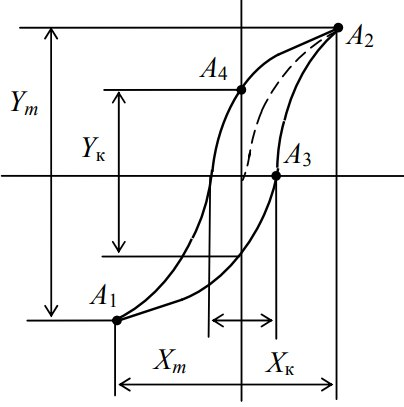

Этапы ваполнения работы
1. Подготовьте таблицу для занесения результатов измерений.
| N1=2900 ; N2= 3 ; S= 0.0003 кв.м. ; a= 0.07 м ; R= 120 м ; C= 0.6 | |||||||||||
|---|---|---|---|---|---|---|---|---|---|---|---|
| i | I | Xk | Yk | Xm | Ym | δх | δy | Нк | Bост | Нm | Вm |
| 1 | 2 | 3 | 4 | 5 | 6 | 7 | 8 | 9 | 10 | 11 | 12 |
2. По приложению к установке ознакомьтесь с расположением элементов управления на передней панели осциллографа. Определите цену деления амперметра на всех диапазонах измерения. Переключателем на амперметре установите диапазон, обеспечивающий измерение тока 1 А.
3. Включите осциллограф. Регуляторами на передней панели выведите световую точку в центр экрана.
4. Рукоятку ЛАТРа установите в положение «0». С разрешения преподавателя или лаборанта включите установку в сеть.
5. Установите ЛАТРом ток в обмотке тороида I = 0,6 А. Получите максимальное изображение петли гистерезиса в пределах экрана осциллографа, манипулируя ручкой «В/дел» осциллографа и изменяя величину сопротивления R и емкости С на магазинах сопротивлений и емкостей. Запишите эти значения в верхнюю графу таблицы (значения R и C подберите, ориентируясь по внешнему виду петли из диапазона 8,0−9,5 кОм и 0,4−0,8 мкФ соответственно). Сцентрируйте петлю относительно начала координатной сетки на экране осциллографа. Снова выставьте рукоятку ЛАТРа в исходное положение (ток равен нулю).
6. Поворотом рукоятки ЛАТРа установите по амперметру ток 0,1 А и запишите координаты точек пересечения петли гистерезиса с осями координат Xк , Yк и вершин петли Xm , Ym в делениях шкалы экрана

7. Повторите эти измерения, меняя ток с интервалом 0,05 А до 0,6 А. Результаты занесите в таблицу.
8. По формулам вычислите значения коэрцитивной силы Нк , остаточной индукции Вост , значения напряженности Нm и индукции Вm в вершинах петли для каждого значения силы тока.
9. Постройте основную кривую намагничения Вm (Нm).
10. Определите значения Нк и Вост при максимальном значении тока в намагничивающей обмотке. Определите класс ферромагнетика.
11. Подготовьте выводы по лабораторной работе